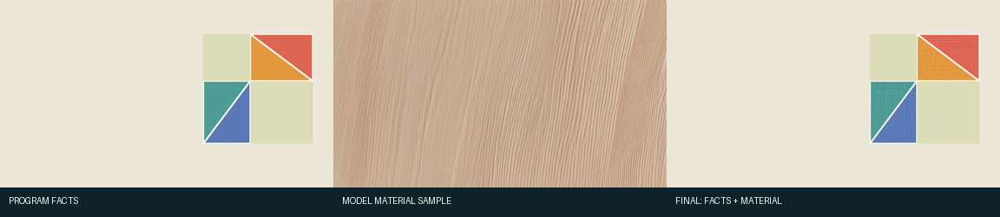
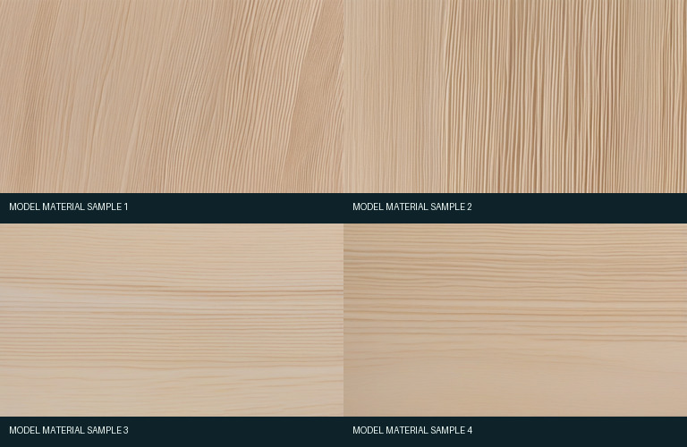

数学 · MATH-02
冻结代表帧回归：通过
四块拼图、共享边和两个空区必须精确；因此 ControlNet 关闭，只借用无对象木纹的高频细节。

自评：接受受限材质投影作为精确数学图的通用候选；它不追求把整张程序图伪装成照片，而是在可验证不改结构的前提下减弱纯色塑料感。
| 范围 | one frozen representative keyframe |
|---|---|
| 机器门 | 3/3 通过 |
| 允许区平均可见变化 | 3.034/255 |
| Phase 6 新模型调用 | 图片 0，视频 0；复用已保存 raw 供体 |
模型当时实际看到的控制图

未使用 ControlNet： 未使用 ControlNet。黑图明确记录控制强度为 0；模型只负责生成一张无科学对象的材质样本。
完整正向与负向图片提示词
正向
Top-down macro material photograph of uniform fine-grain unfinished pale wood, edge-to-edge sample, subtle natural wood fibers, fine pores, low contrast matte surface, diffuse studio light, even material swatch without boards or assembled objects, uniform texture scale, no seams, no focal object, no text
负向
planks, board seams, panels, frames, puzzle pieces, blocks, furniture, knots, cracks, holes, saw marks, strong stripes, perspective, shadows, hands, numbers, letters, formulas, text, labels, arrows, user interface, watermark, plastic, metal, blur
四个 raw 模型候选（材质供体）

样本 1–4 对应四个冻结复现编号；主报告隐藏编号是为了先说明作用，具体编号仍保存在 机器证据中。这些是模型直接输出，不等于最终图。程序把每张候选减去模糊低频，只保留 限幅的小尺度残差，再对四张逐像素取中位数；最终只投影到允许区。


{kind=link}
{kind=link}
{kind=link}
{kind=link}
{kind=link}